RUN50 WECHAT EDITIONS
微信公众号版
为公众号复制和发布准备的杂志版文章：Vlog 开场、图文穿插、精致图注、适合手机阅读的节奏。

Run50 #第1州番外 肯塔基 德比马拉松 赛马城最大的跑步 Party
肯塔基路易斯维尔 · 2023.04.29
回到自己的城市，把肯塔基德比马拉松补成一篇：赛马季、Twin Spires、市中心、朋友们，还有路城最大的跑步 Party。

Run50 #第1州｜肯塔基：路易斯维尔马拉松｜北美的第一个全马
Run50 · 50州跑马故事
2020年11月8日，疫情中的路易斯维尔马拉松搬到Beckley Creek Park。间隔起跑、六英尺社交距离、正午高温，以及我在北美完成的第一个全马。
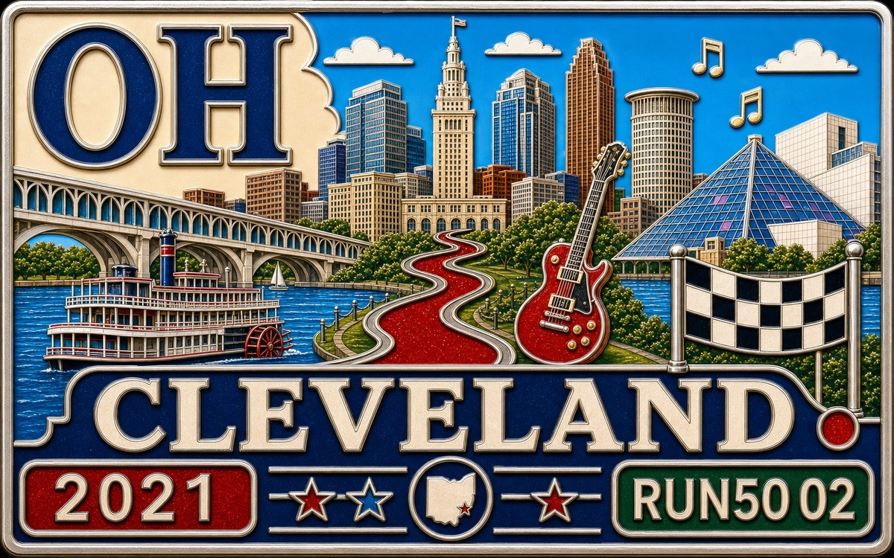
Run50 #第2州｜俄亥俄：克利夫兰马拉松｜从黑夜跑到白昼
克利夫兰 · 俄亥俄 · 2021.10.24
城市篇与比赛篇合并：摇滚名人堂、骑士主场、伊利湖和清晨冷风中的克利夫兰马拉松。
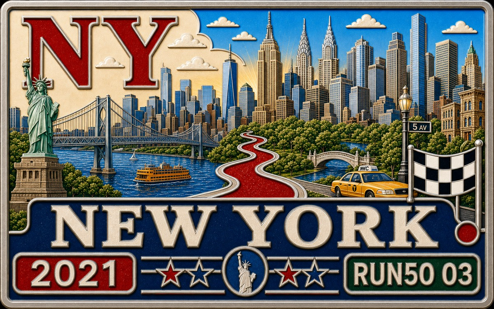
Run50 #第3州｜纽约：纽约马拉松｜50周年打卡
纽约 · 纽约州 · 2021.11.07
城市篇与比赛篇合并：赛博朋克纽约、法拉盛、时代广场、哈德逊河游船，以及50周年纽约马拉松的五区奔跑。
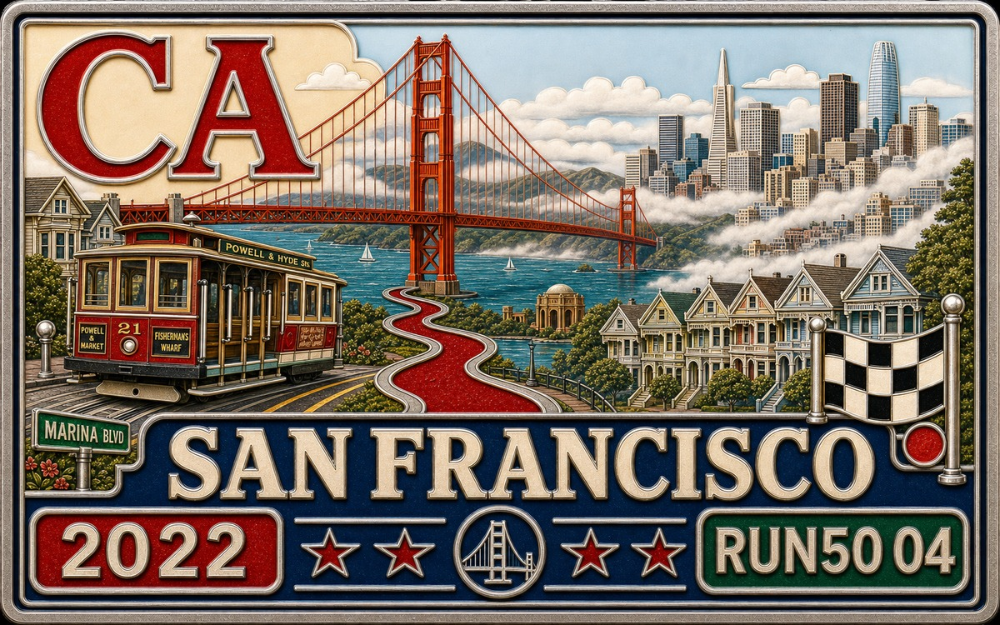
Run50 #第4州｜加州：旧金山马拉松｜流雾之下的金门大桥
旧金山，加州 · 2022.07.24
Run50第4州加州旧金山：流雾、联合广场、金门大桥、唐人街、单车游城，以及2022年7月24日第45届旧金山马拉松。

Run50 #第5州｜印第安纳：印第安纳波利斯纪念碑马拉松｜一日狂飙
印第安纳波利斯，印第安纳 · 2022.11.05
Run50第5州印第安纳：2022年11月5日印第安纳波利斯纪念碑马拉松，一场清晨出发、秋雨开跑、最终4小时55分12秒完赛的单日跑马旅程。

Run50 #第6州｜夏威夷：火奴鲁鲁马拉松｜50周年海岛白日梦
Honolulu, Hawaii · Dec 11, 2022
Run50第6州夏威夷：火奴鲁鲁白日梦、威基基、钻石头山、彩虹船、自驾西海岸，以及2022年12月11日第50届火奴鲁鲁马拉松，47的第一个全马。
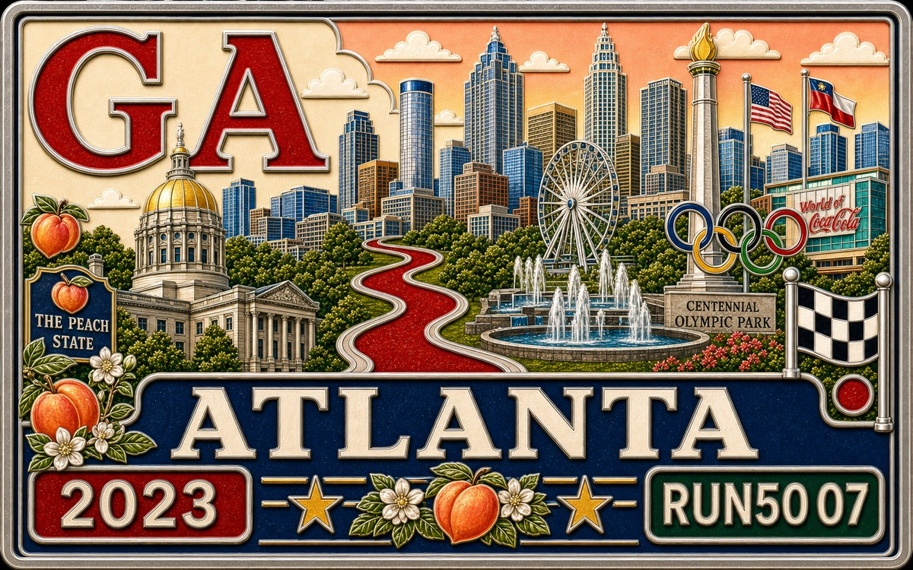
Run50 #第7州｜佐治亚：亚特兰大马拉松｜跑过奥运五环
Atlanta, Georgia · Feb 26, 2023
Run50 第7州来到亚特兰大：96奥运、可口可乐、CNN、城市坡道，以及我和47各自的26.2与13.1。

Run50 #第2州番外｜俄亥俄：辛辛那提飞猪马拉松｜飞猪变飞鱼
Cincinnati, Ohio · May 7, 2023
第二次在俄亥俄跑全马，这次来到皇后城辛辛那提：桥、河、坡、雨水，以及从 Flying Pig 变成 Flying Fish 的一天。
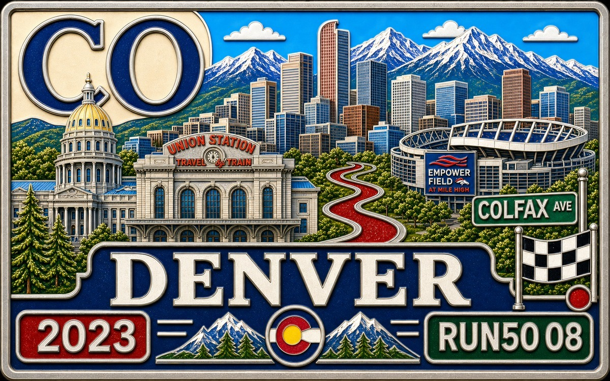
Run50 #第8州｜科罗拉多：丹佛 Colfax 马拉松｜里高城的26.2英里
Denver, Colorado · May 21, 2023
生日后的第一个周末，去丹佛点亮科罗拉多：老同学、阳光、雪山、球场，以及里高城的26.2英里。
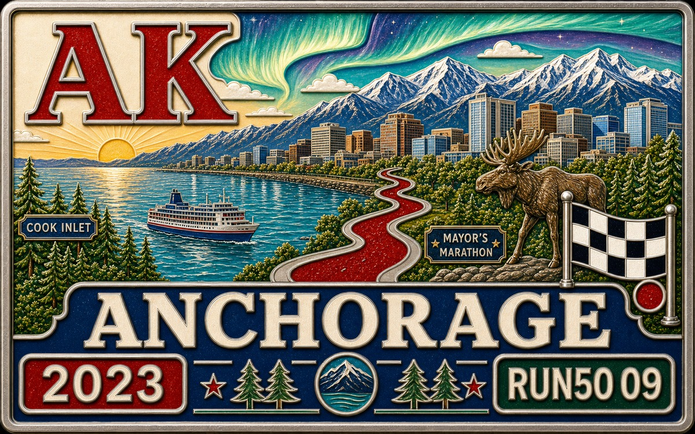
Run50 #第9州｜阿拉斯加：安克雷奇马拉松｜去没有极光的阿拉斯加
Anchorage, Alaska · Jun 17, 2023
Run50 第9州飞到阿拉斯加：没有极光，却有雪山、海湾、野性、夏至前后的长日照和安克雷奇的26.2英里。

Run50 #第10州｜密苏里：圣约瑟夫马拉松｜第一届，不一般
St. Joseph, Missouri · Sep 23, 2023
穿越密苏里，来到西北角的圣约瑟夫：第一届赛事、公园道路、坡、热浪、婚礼，以及芝加哥前的一次长距离训练。
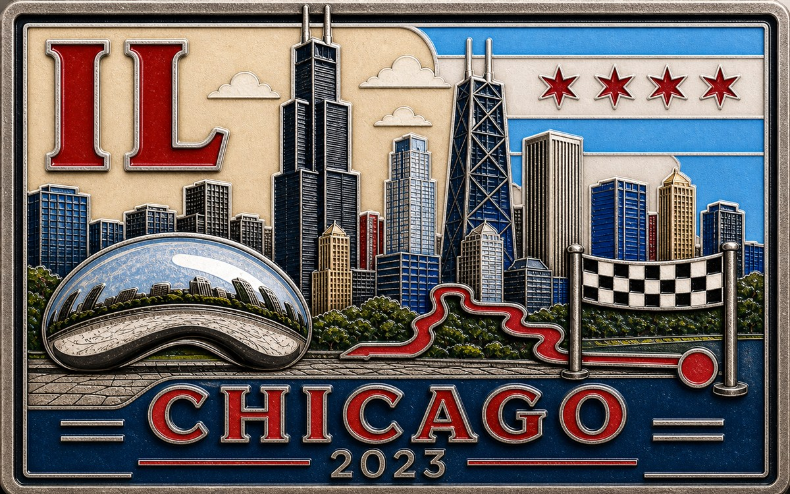
Run50 #第11州｜伊利诺伊：芝加哥马拉松｜45周年打卡，我们的第二个大满贯
Run50 · 50州跑马故事
2023年10月8日的第45届芝加哥马拉松：第二个世界大满贯、Run50第11州、基普图姆世界纪录诞生的一天，以及Siqi的第一个大满贯完赛。

Run50 #第12州｜田纳西：纳什维尔马拉松｜音乐之城的慢悠跑者，十月艳阳下的最慢跑
Run50 · 50州跑马故事
十月底的音乐之都纳什维尔，在万圣节前夕跑过坎伯兰河与行人天桥，在极其炎热与暴晒的艳阳下，跑出了本年最慢的PW成绩，并在纳什维尔之音棒球场冲线！
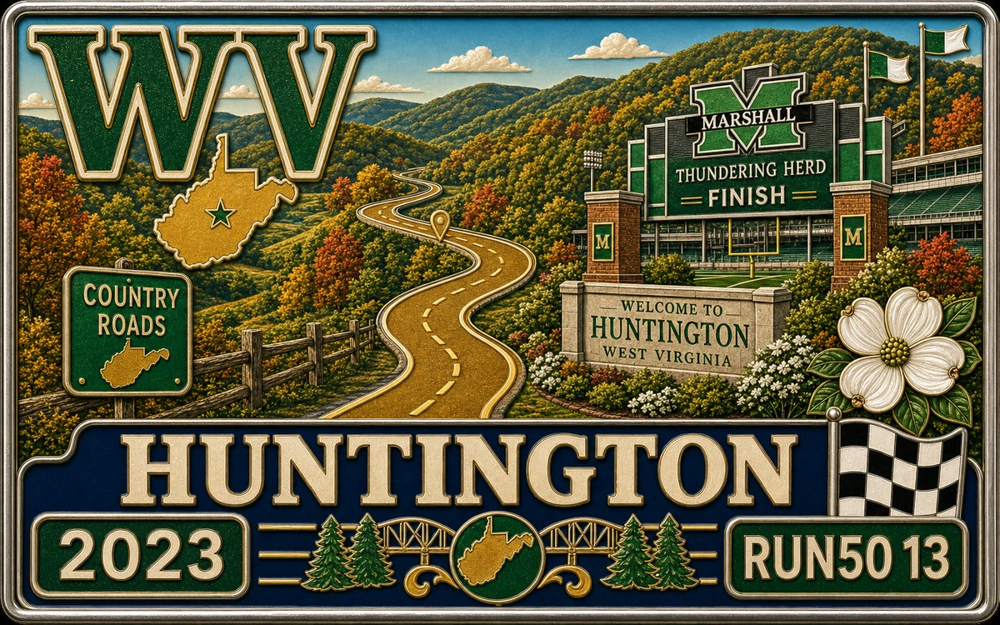
Run50 #第13州｜西弗吉尼亚：马歇尔大学马拉松｜抱着橄榄球达阵，在乡村路跑进四小时！
Run50 · 50州跑马故事
十一月初的西弗吉尼亚亨廷顿，在秋高气爽的马歇尔大学校园，将一朵花送给1970年空难的离世队员们；在终点抱着橄榄球“达阵”冲线，成功破4！

Run50 #第14州｜德克萨斯：圣安东尼奥摇滚马拉松｜没有马刺，也没有文班亚马
Run50 · 50州跑马故事
这是 Run50 的第14州，也是2023年的收官马拉松：从马刺和文班亚马的念头出发，最后在圣安东尼奥跑过阿拉莫、河畔步道、Fort Sam Houston、绿道和一段德州。

Run50 #第15州｜佛罗里达：基韦斯特、奥兰多与迪士尼马拉松
Run50 · 50州跑马故事
把基韦斯特跨年、奥兰多乐园速通和迪士尼马拉松合成一篇完整的佛州第15州故事。
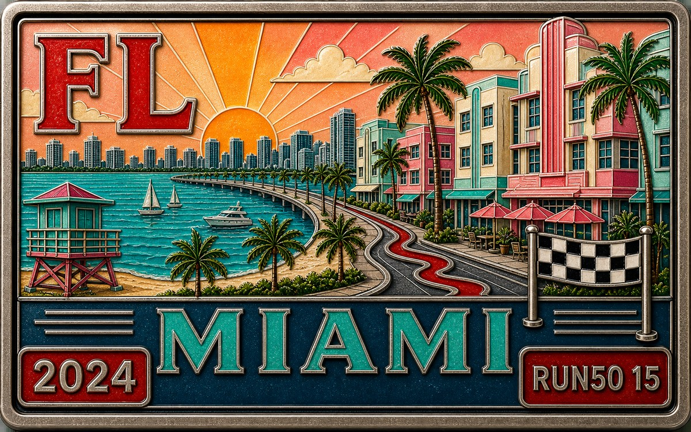
Run50 #第15州｜佛罗里达#2：迈阿密马拉松｜穿C罗战袍，跑在梅西的主场！
Run50 · 50州跑马故事
一张买错日期的机票，让我们意外重返迈阿密。身披C罗战袍，在梅西的主场迎着热浪跑完26.2英里。佛罗里达，第15州全马二刷，50州征程继续推进。
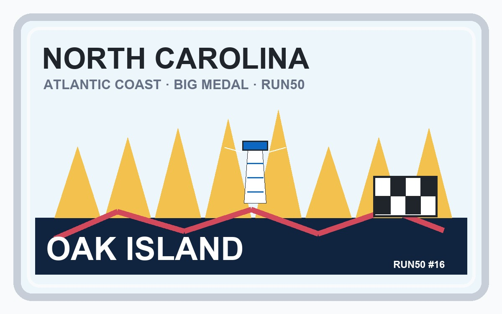
Run50 #第16州｜北卡罗莱纳：橡树岛马拉松
Run50 · 50州跑马故事
从深冬训练出发，奔向北卡海岸线和大西洋，把第16州签收在一块大得离谱的奖牌里。

Run50 #第17州｜阿肯色：小石城马拉松｜奖牌第一大，克林顿老家也没那么荒！
Run50 · 50州跑马故事
三月初的小石城马拉松，为了那块巨大的绿色暴龙奖牌驱车向南。跑过市中心、达索公司和奥索普森林公园，冲线克林顿总统的故乡。

Run50 #第18州｜南卡罗莱纳：反“波士顿”马拉松｜小区绕圈20，世界上最无聊42公里？
Run50 · 50州跑马故事
南卡罗莱纳小镇Greer的2Slow4Boston马拉松，一个专为跑不进波马的人准备的反向比赛。在宁静的小区里绕圈20次，收获一块骡子拉大叔的奇特奖牌。

Run50 #第1州｜肯塔基：赛马节马拉松｜四刷主场，蓝草州终破4！
路易斯维尔，肯塔基 · 2024.04.27
第四次回到 Louisville Derby Marathon，从赛马节、热气球、Old Louisville、Churchill Downs 到 Iroquois Par。

Run50 #第19州｜宾夕法尼亚：匹兹堡马拉松｜钢铁之心，拿下摇摆州！
Run50 · WeChat Edition
Run50 #第19州｜宾夕法尼亚：匹兹堡马拉松｜钢铁之心，拿下摇摆州！

Run50 #第20州｜威斯康辛：绿湾马拉松｜跑进兰博球场的最后一届
威斯康辛绿湾 · 2024.05.20
从风城和密歇根湖一路北上，在奶酪州的热浪里跑进 Green Bay Packers 的圣地兰博球场。

Run50 #第1州｜肯塔基#2：哈特菲尔德–麦考伊马拉松｜阿巴拉契亚山谷的脚步声与枪声
Run50 · WeChat Edition
Run50 #第1州｜肯塔基#2：哈特菲尔德–麦考伊马拉松｜阿巴拉契亚山谷的脚步声与枪声
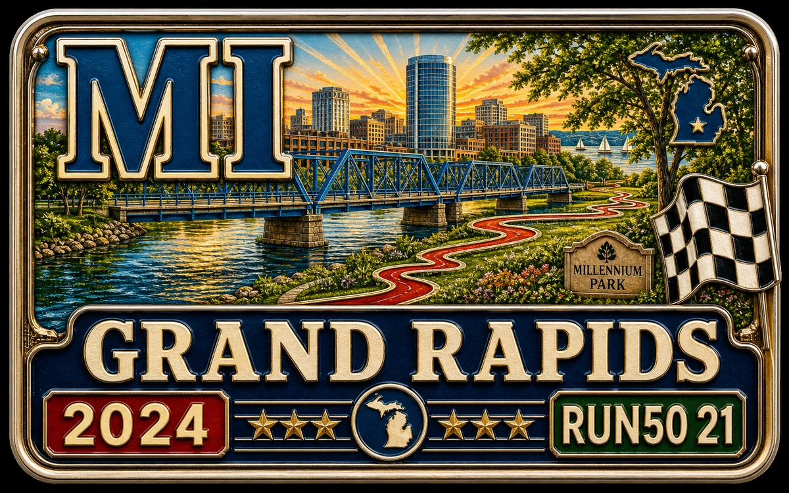
Run50 #第21州 密歇根 梅多马拉松 在大急流城数圈，6次穿越千禧公园！
密歇根大急流城 · 2024.08.25
在大急流城千禧公园跑六圈全马：Parkrun 开头、车祸小插曲、Grand River 日出、六道轮回和 4 小时 44 分的三味真火。
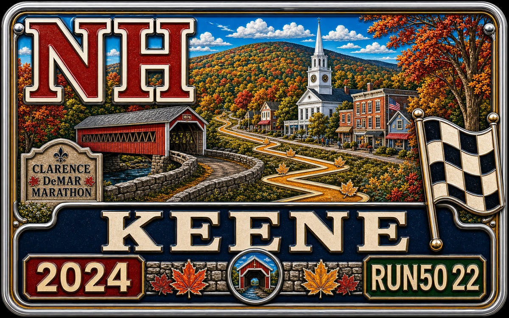
Run50 #第22州｜新罕布什尔：克拉伦斯·德马尔马拉松｜跑进新英格兰小镇，穿越秋色森林与墓地！
新罕布什尔基恩 · 2024.09.28
从尼亚加拉瀑布一路开进新英格兰秋色，在基恩的小镇清晨、山林赛道和校园终点里完成第22州。

Run50 #第1州番外｜肯塔基#3：路易斯维尔马拉松｜博士收官战，送我一朵小红花
肯塔基路易斯维尔 · 2024.11.03
回到美国跑马起点，在 Floyds Fork 的秋色里把博士生涯跑成一个完整的 loop。

Run50 #第23州｜路易斯安那：巴吞鲁日马拉松｜法兰西底色，2025 第一跑
路易斯安那巴吞鲁日 · 2025.01.19
新年第一跑，从达拉斯转机到新奥尔良，再开进巴吞鲁日，把南方湿地、LSU 紫金色和 Finish Fest 串在一起。

Run50 #第24州｜弗吉尼亚：蓝岭山马拉松｜全美最虐赛道，3,564英尺的暴力美学
弗吉尼亚罗阿诺克 · 2025.04.12
America's Toughest Road Marathon，把马拉松跑成登山赛，也把蓝岭山脉的硬派风光跑进腿里。

Run50 #第1州番外｜肯塔基#4：德比马拉松｜三个奖牌，一块蛋糕，我的第50场马拉松！
肯塔基路易斯维尔 · 2025.04.26
工作后的第一场德比马拉松，也是个人第50场全马：周五 5K、周六全马、三块奖牌和一块蛋糕。
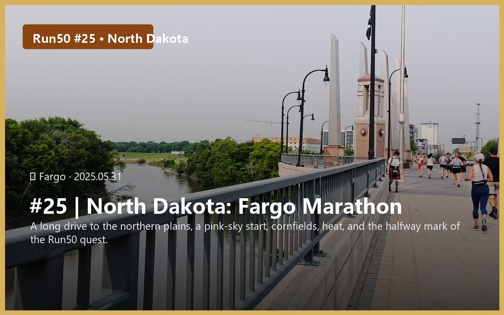
Run50 #第25州｜北达科他州：法戈马拉松｜跑进美剧小镇，踏上50州跑马的“半程分水岭”！
北达科他法戈 · 2025.05.31
从蓝草州一路开到大平原，在粉色天空、玉米地、热浪和破4里完成 Run50 半程分水岭。
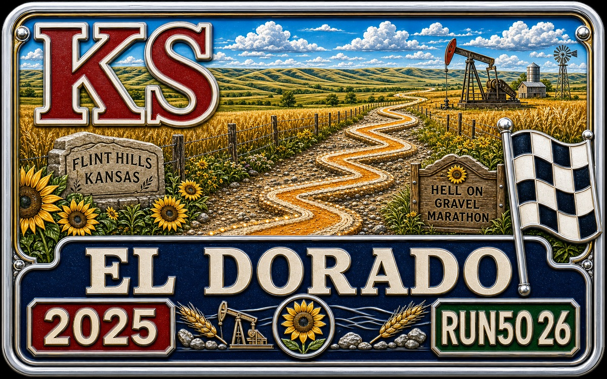
Run50 #第26州｜堪萨斯：地狱砂石马拉松｜冠军就是冠军，哪怕全马只有十个人！
堪萨斯埃尔多拉多 · 2025.06.28
风、牛群、麦田和砂石路，把一场小到只有十个人的全马跑成了冠军故事。

Run50 #第27州｜佛蒙特：疯河谷马拉松｜绿山之州的夏天，跑进乡村油画里
佛蒙特沃伦 · 2025.07.17
开进新英格兰腹地，在绿山、谷仓、国旗和乡村小路中，跑进一幅夏天的油画。

Run50 #第28州｜阿拉巴马：火箭城马拉松｜寒流来袭，南方跑马也得穿秋裤
阿拉巴马亨茨维尔 · 2025.12.12
在寒流里的火箭城起跑，把南方州、航天工业、大火箭和路村朋友们一起跑进 2025 收官。
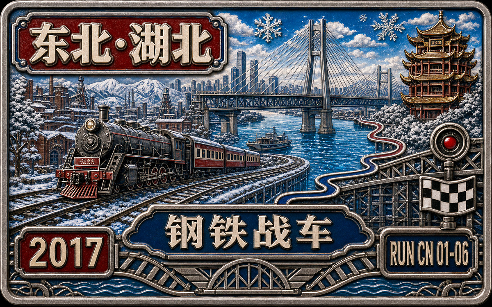
RunCN #第1-6站｜钢铁战车的故事
RunCN · 中国跑马故事
半年，6座城，3半马，3全马。从胖纸、足球后腰到跑马的人，钢铁战车的起点在这里。
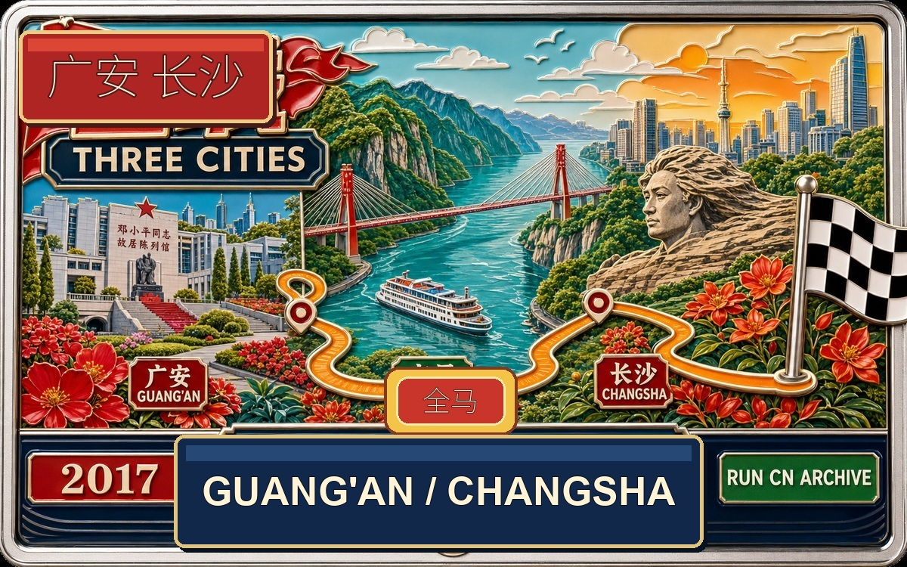
RunCN #第7-9站｜鲜衣怒马，烈焰红花：三座城的朝圣之旅
RunCN · 中国跑马故事
广安、宜昌、长沙，三座城，三场跑，一路红花，把科研间隙里的热血和朝圣都写进 2017。
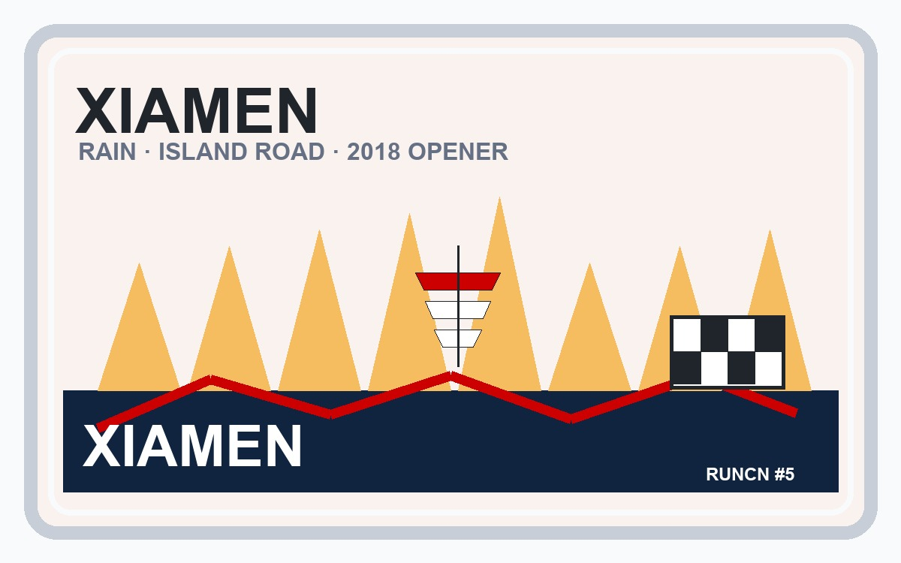
RunCN #第10站｜厦门马拉松：以最难忘的出场，享拥每一句赞扬
RunCN · 中国跑马故事
2018年的首马，在厦门的雨里开场：曾厝垵、兄弟重逢、赛道掌声和一个惊艳自己的开局。
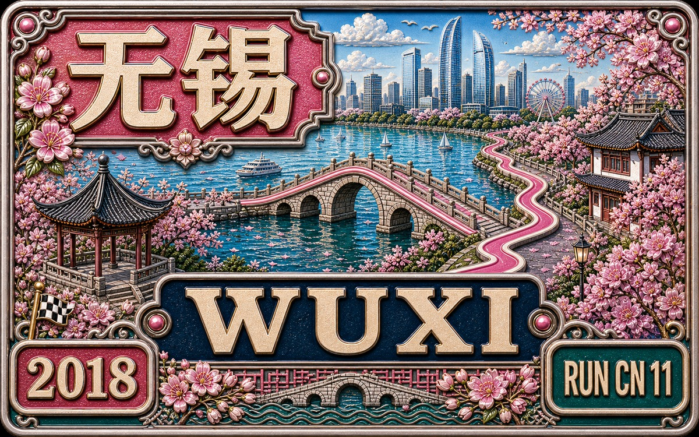
RunCN #第11站｜无锡马拉松笔记：樱花树下绽放
RunCN · 中国跑马故事
三月，奔跑与樱花不期而遇。东湖岸边、蠡湖水畔，三场比赛写成一篇真实的跑马笔记。
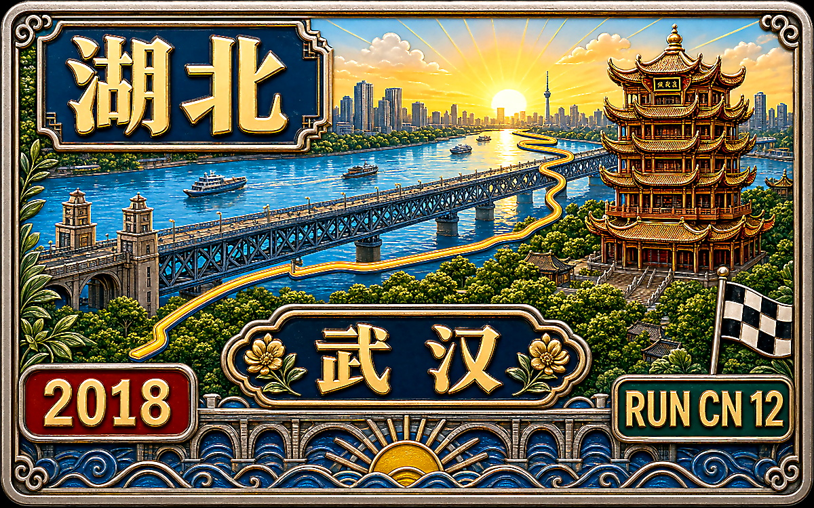
RunCN #第12站｜武汉马拉松：连接百年的奔跑
RunCN · 中国跑马故事
想读懂汉马，先读懂武汉。从辛亥、东湖到赛道热浪，把江城的体育基因写进一场马拉松。
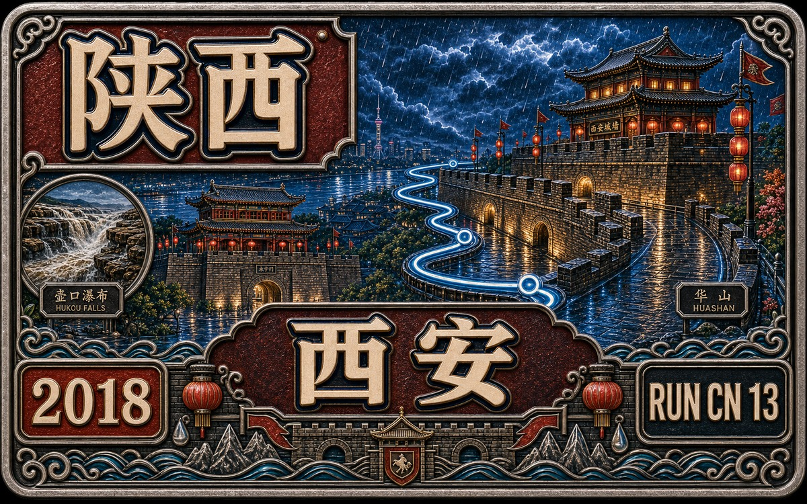
RunCN #第13站｜西安城墙马拉松：风雨城墙路
RunCN · 中国跑马故事
一场西安城墙马，把兵马俑、华清池、大雁塔、华山、壶口瀑布和千年长安都串进风雨里。
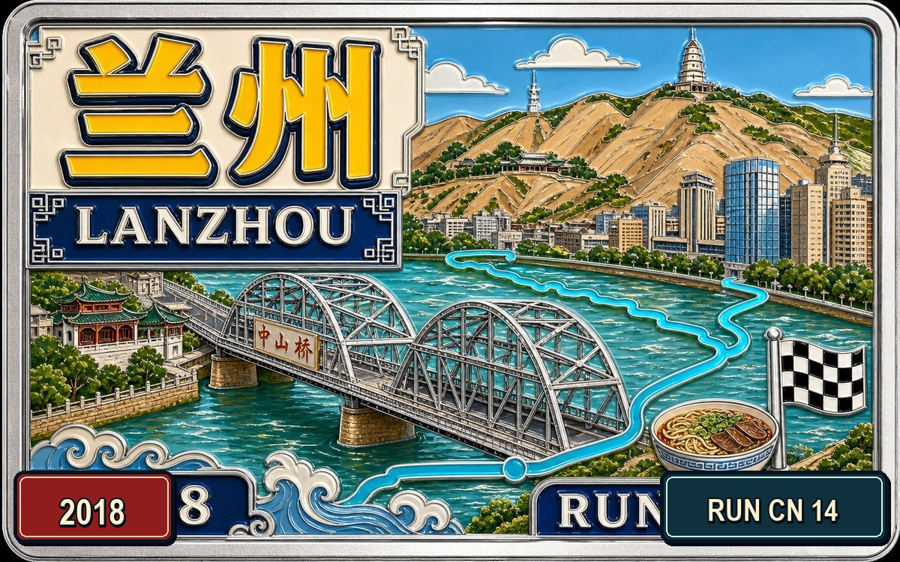
RunCN #第14站｜兰州马拉松：河西走廊东边的野望与奔腾
RunCN · 中国跑马故事
一碗面、一条河、一本书、一座城，把兰马写进河西走廊东边的风与奔腾。
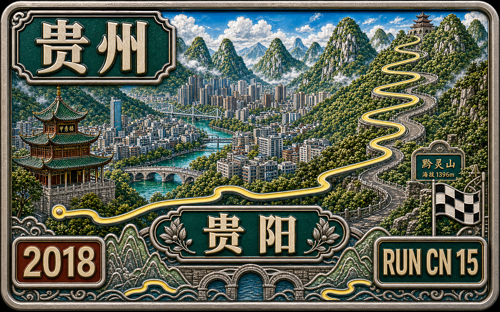
RunCN #第15站｜贵阳马拉松：夜郎漫行，此心光明
RunCN · 中国跑马故事
从青岩古镇、花溪夜郎谷到贵阳马拉松和梵净山，在“Climb”的爬升里，把身体和心都带去贵州修行。
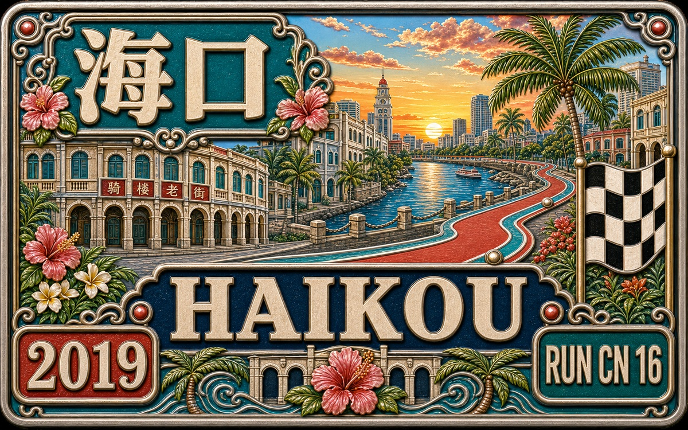
RunCN #第16站｜海口：诗和远方与星沉大海
RunCN · 中国跑马故事
错过三亚，又跑丢海口，但骑楼老街、海风、芳华小院和2019的开篇仍然值得留下。

RunCN #第17站｜武汉汉马：独家记忆
RunCN · 中国跑马故事
即将离开武汉的人，也会有乡愁。汉马、武大和江城三年的断片，被拼成一篇独家记忆。

RunCN #第18站｜大连越野：越过山丘，在大连
RunCN · 中国跑马故事
第一场真正意义上的越野赛，去大连西海岸，越过山丘，也看见东北的自由与斑驳。
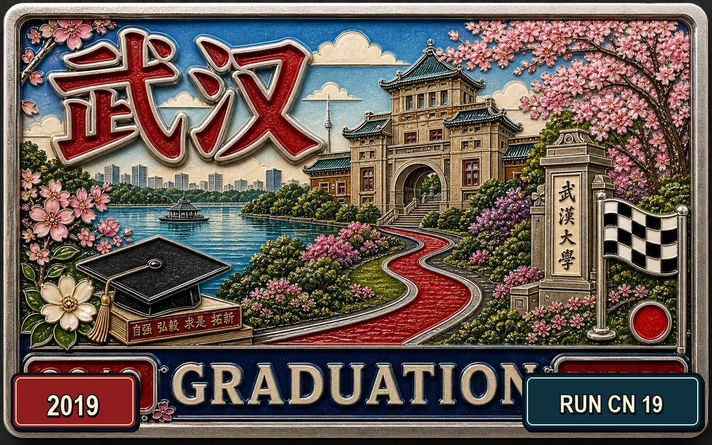
RunCN #第19站｜北京凤凰岭夜跑：毕业图话，迟到了两年
RunCN · 中国跑马故事
迟到两年的毕业图话，把爸妈、武大、东湖、毕业典礼和那段武汉时光收进同一篇回忆。
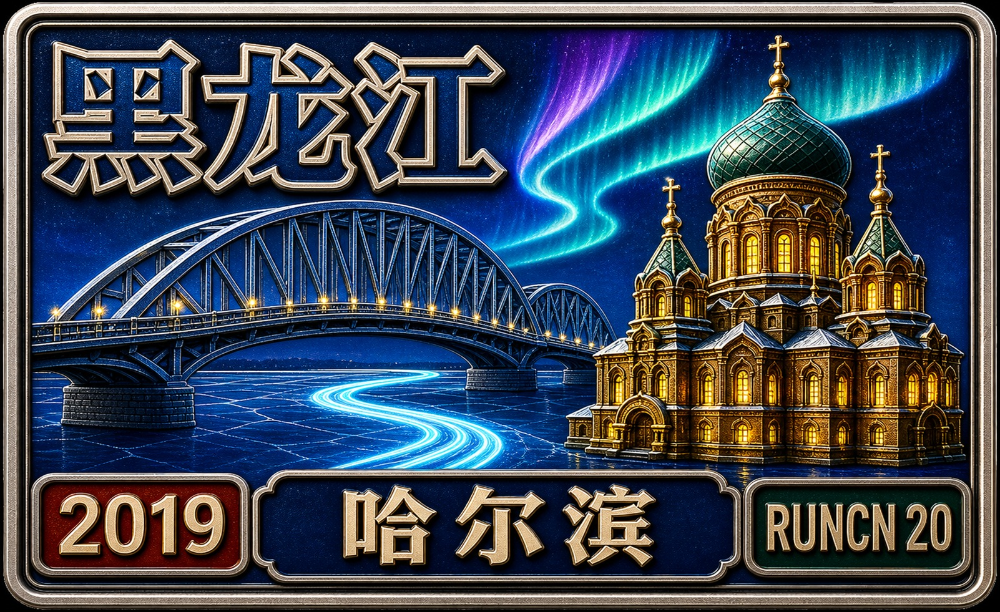
RunCN #第20站｜哈尔滨马拉松：那年，我在东北老家跑哈马
RunCN · 中国跑马故事
因为 check 多跑了一次哈马。松花江、黑土地、老家和疫情前那些快活的流浪日子，都在这篇里。

RunCN #第21站｜西湖半马：我去西湖跑半马，偶遇跑者施一公
RunCN · 中国跑马故事
从上海到杭州，去西湖边甩肉，跑一场半马，也偶遇了跑者施一公。
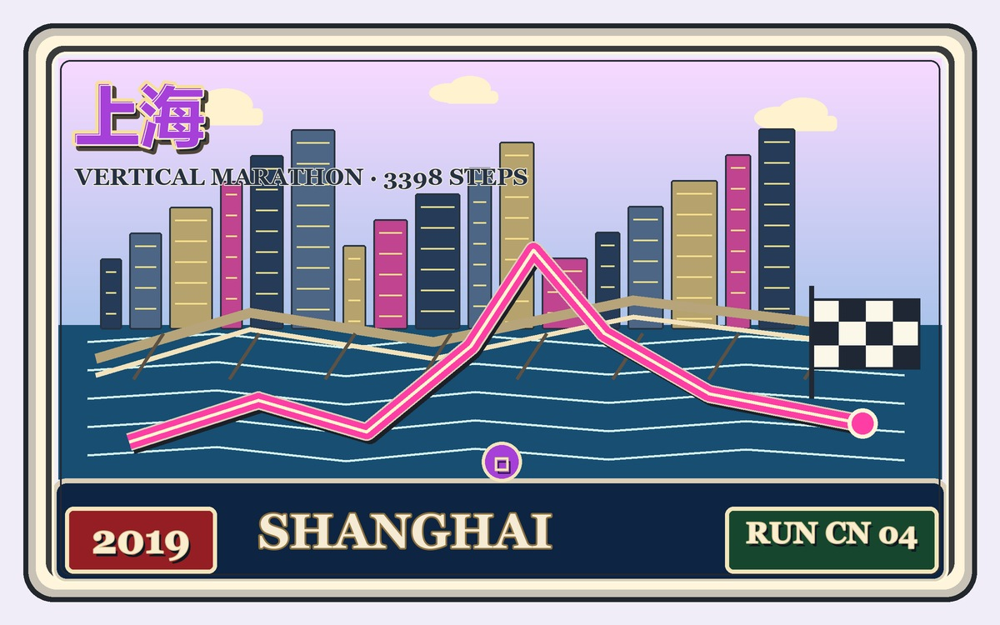
RunCN #第22站｜上海中心垂直马拉松
RunCN · 中国跑马故事
在签证等待的特殊时期，爬上119层、3398级台阶，在632米高处俯瞰浦江两岸。
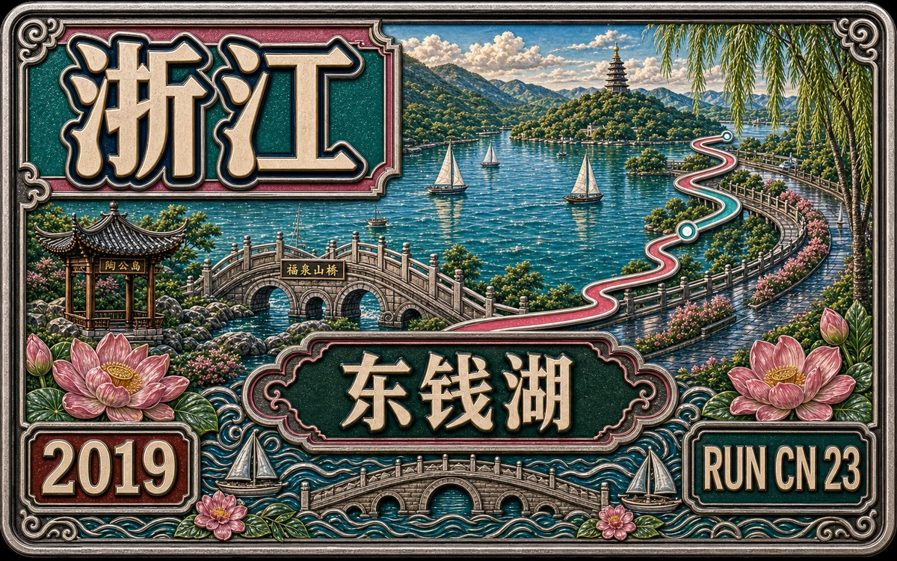
RunCN #第23站｜宁波东钱湖马拉松：宁波，东钱湖边的聚会
RunCN · 中国跑马故事
2019 年岁末，在浙江最大的天然湖泊东钱湖边，骑行、跑马、见老友，也走进奉化的历史深处。

RunCN #第24站｜襄阳马拉松
RunCN · 中国跑马故事
RunCN 第 1 站来到湖北襄阳。古城、城墙、汉江、大桥与街区被一条马拉松赛道串联起来，历史感和生活气并存。襄阳马拉松规模不大但口碑稳定，补给密集、志愿者热情，赛道节奏友。
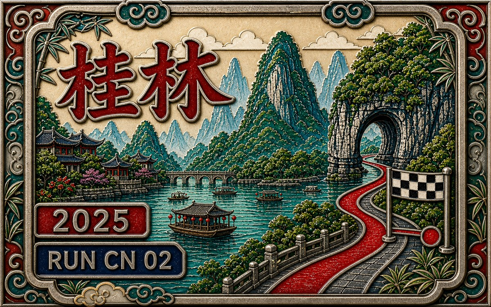
RunCN #第25站｜桂林马拉松
RunCN · 中国跑马故事
这是我跑中国的第二站，广西桂林马拉松。比赛从中心广场出发，赛道贴着漓江，一路跑进穿山和七星一带。前半程风景很好，后半程暴晒明显，爸妈和大娘也在终点等我。
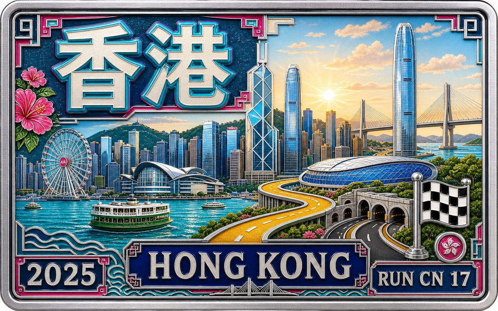
RunCN #第26站｜香港嘉里街道马拉松
RunCN · 中国跑马故事
这是我跑中国的第三站，香港嘉里街道马拉松。凌晨五点从东岸公园出发，穿过中环湾仔绕道、东隧、将军澳跨湾大桥和中九龙干线隧道，在高架、海风和城市街区里完成这趟收尾跑。
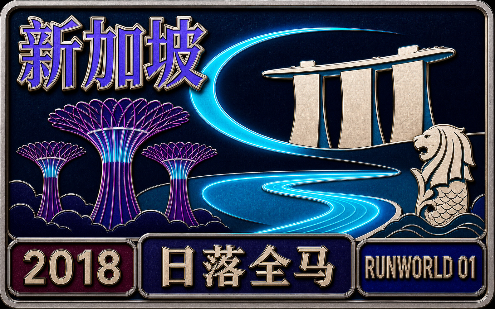
RunWorld #第1站｜新加坡 Sundown Marathon：十年之约，归来仍是少年
RunWorld · 世界跑马故事
十年之后，再下南洋：从樟宜、南洋理工到 Sundown Marathon，在新加坡的夜与晨之间，确认自己仍然可以热血。
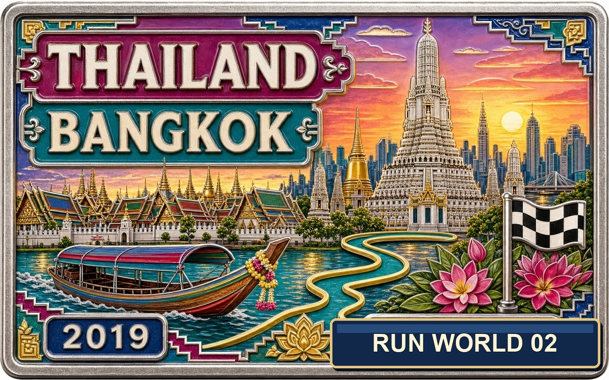
RunWorld #第2站｜曼谷马拉松：昼夜不停
RunWorld · 世界跑马故事
去泰国跑马，不囧，反而意犹未尽：寺庙、夜色、四面佛和一个昼夜不停的曼谷。

RunWorld #第3站｜墨西哥：墨西哥城马拉松｜阿兹特克高原42公里，金字塔外一场奇遇
RunWorld · 世界跑马故事
这是我跑世界的第五站，墨西哥城马拉松。趁 Labor Day 三天小长假，从美国飞墨城，在 2,240 米高原跑过城市主轴、改革大道、终点冲进宪法广场；赛后还有金字塔、洞穴。
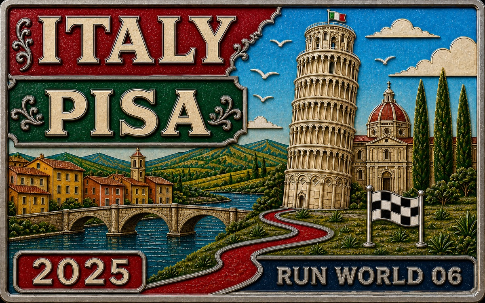
RunWorld #第4站｜意大利：比萨马拉松｜在亚平宁上艺术课，在斜塔前锻炼身体
RunWorld · 世界跑马故事
圣诞假期前的比萨马拉松，穿过斜塔、阿诺河、托斯卡纳乡村和利古里亚海，再一路把奖牌带去威尼斯、米兰、佛罗伦萨和罗马。

Run50 #第29州｜亚利桑那 Buckeye Marathon：沙漠清晨，机场终点，2026 第一跑破4
亚利桑那巴克艾 · 2026.01.10
沙漠清晨、巨人柱、Buckeye 机场终点，还有二〇二六第一场意外破四。
后续每一篇公众号杂志版都会放在这里，方便从 Run50 首页直接进入。